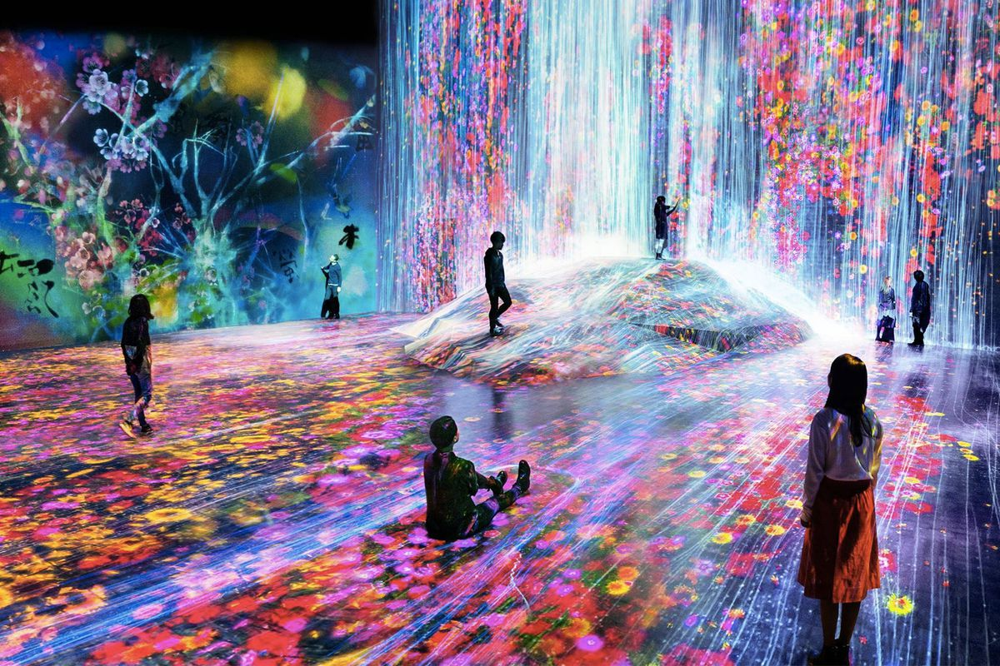
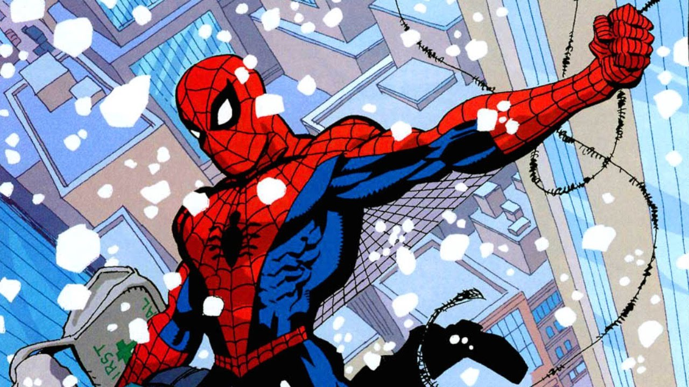

Music is a centeral part of my life, mostly Rap and R/B.
Picture 2

I recently discovered a love for art, which drew me to minor in NMDD.
Picture 3
I've been interested in fashion, specifically streetwear, since high school and has shaped many of my current interests.
Picture 4
The first computer I had ran on Windows 98, which made me appreciate computers and led me to now major in Computer Science.
Picture 5

I've had an interest in comics for years now, and have an appreciation for the time it takes to draw and bring to life the pages in said comics. Continuation